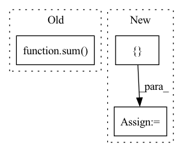

Pattern ID :795

Before Change
self.block_aggs = nn.ModuleList([])
drop_path_rates = [x.item() for x in torch.linspace(0, drop_path_rate, sum(depths))]
for lix in range(self.num_levels):
dpr = drop_path_rates[sum(depths[:lix]):sum(depths[:lix+1])]
self.levels.append(NestLevel(
self.num_blocks[lix], self.block_size, self.seq_length, num_heads[lix], depths[lix],
embed_dims[lix], mlp_ratio, qkv_bias, drop_rate, attn_drop_rate, dpr, norm_layer,
After Change
levels.append(NestLevel(
self.num_blocks[i], self.block_size, self.seq_length, num_heads[i], depths[i], dim, prev_dim,
mlp_ratio, qkv_bias, drop_rate, attn_drop_rate, dp_rates[i], norm_layer, act_layer, pad_type=pad_type))
self.feature_info += [dict(num_chs=dim, reduction=curr_stride, module=f"levels.{i}")]
prev_dim = dim
curr_stride *= 2
self.levels = nn.Sequential(*levels)
In pattern: SUPERPATTERN
Frequency: 3
Non-data size: 3
Instances
Fragment ID: 2653659
Project Name: feng-lab/pytorch-image-models
Commit Name: 81cd6863c8c9515de8884e8a8ea0445ec08b4486
Time: 2021-07-05
Author: rwightman@gmail.com
File Name: timm/models/nest.py
M Class Name: Nest
N Class Name: Nest
M Method Name: __init__(19)
N Method Name: __init__(19)
M Parent Class: nn.Module
N Parent Class: nn.Module
M File Name: timm/models/nest.py
N File Name: timm/models/nest.py
M Start Line: 216
M End Line: 301
N Start Line: 220
N End Line: 300
'>
Before Change
if use_se:
use_ses = [False] * (layers[0] + layers[1]) + \
[True] * sum(layers[2:])
else:
use_ses = [False] * sum(layers[:])
for block_idx, (in_c, c, t, s, se) in enumerate(zip(in_channels_group, channels_group, ts, strides, use_ses)):
After Change
layers = [1, 2, 2, 3, 3, 5]
strides = [1, 2, 2, 2, 1, 2]
use_ses = [False, False, True, True, True, True]
layers = [ceil(element * depth_mult) for element in layers]
strides = sum([[element] + [1] * (layers[idx] - 1)
'>
Fragment ID: 2653660
Project Name: clovaai/rexnet
Commit Name: 104f2184754d97b8050f24bdf39f650b3e80cad8
Time: 2020-08-04
Author: dongyoon.han@navercorp.com
File Name: rexnetv1.py
M Class Name: ReXNetV1
N Class Name: ReXNetV1
M Method Name: __init__(10)
N Method Name: __init__(11)
M Parent Class: nn.Module
N Parent Class: nn.Module
M File Name: rexnetv1.py
N File Name: rexnetv1.py
M Start Line: 116
M End Line: 162
N Start Line: 133
N End Line: 172
'>
Before Change
net.append(MultiDilatedConvBlock(num_features, growth_rate[idx], kernel_size=kernel_size, norm=norm, nonlinear=nonlinear, eps=eps))
self.net = nn.Sequential(*net)
self.out_channels = sum(growth_rate)
self.eps = eps
def forward(self, input):
After Change
if type(growth_rate) is int:
assert depth is not None, "Specify `depth`"
growth_rate = [growth_rate] * depth
elif type(growth_rate) is list:
if depth is not None:
assert depth == len(growth_rate), "`depth` is different from `len(growth_rate)`"
depth = len(growth_rate)
else:
raise ValueError("Not support growth_rate={}".format(growth_rate))
self.growth_rate = growth_rate
self.depth = depth
net = []
_in_channels = in_channels
for idx in range(depth):
_out_channels = sum(growth_rate[idx:])
dilation = 2**idx
conv_block = ConvBlock2d(_in_channels, _out_channels, kernel_size=kernel_size, stride=1, dilation=dilation, eps=eps)
net.append(conv_block)
_in_channels = growth_rate[idx]
'>
Fragment ID: 2653666
Project Name: tky823/dnn-based_source_separation
Commit Name: 8fb5cd5f4f8b4a435d058aef6204904f657abea0
Time: 2021-06-06
Author: 40362510+tky823@users.noreply.github.com
File Name: src/models/d2net.py
M Class Name: D2Block
N Class Name: D2Block
M Method Name: __init__(6)
N Method Name: __init__(8)
M Parent Class: nn.Module
N Parent Class: nn.Module
M File Name: src/models/d2net.py
N File Name: src/models/d2net.py
M Start Line: 10
M End Line: 40
N Start Line: 21
N End Line: 42